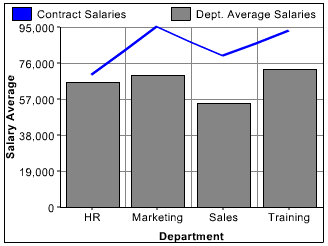

Charting data
|

One of the most important
considerations when you chart data is the way that you supply the
data to the cfchart tag. You can supply data in
the following ways:
Specify individual data points by using cfchartdata tags.
Provide all the data in a single query by using cfchartseries tags.
Combine data from a query with additional data points from cfchartdata tags.
Provide all the data in a report created with Report Builder.
For more information, see Creating Reports and Documents for Printing.
Note: The cfchart tag charts numeric
data only. As a result, convert any dates, times, or preformatted
currency values, such as $3,000.53, to integers or real numbers.
Charting individual data pointsWhen
you chart individual data points, you specify each data point by
inserting a cfchartdata tag in the cfchartseries tag
body. For example, the following code creates a simple pie chart:
<cfchart>
<cfchartseries type="pie">
<cfchartdata item="New Vehicle Sales" value=500000>
<cfchartdata item="Used Vehicle Sales" value=250000>
<cfchartdata item="Leasing" value=300000>
<cfchartdata item="Service" value=400000>
</cfchartseries>
</cfchart>
This pie chart displays four types of revenue for a car dealer.
Each cfchartdata tag specifies the income for a
department and a description for the legend.
Note: If two data points have the same item name,
ColdFusion creates a graph of the value for the last one specified
within the cfchart tag.
The cfchartdata tag
lets you specify the following information about a data point:
Attribute
|
Description
|
|---|
value
|
The data value to chart. This attribute
is required.
|
item
|
(Optional) The description for this data
point. The item appears on the horizontal axis of bar and line charts,
on the vertical axis of horizontal bar charts, and in the legend
of pie charts.
|
Charting a queryEach
bar, dot, line, or slice of a chart represents data from one row/column coordinate
in your result set. A related group of data is called a chart series.
Because each bar, dot, line, or slice represents the intersection
of two axes, craft the query result set such that the row and column
values have meaning when displayed in a chart. Often, doing so requires
you aggregate data in the query. You typically aggregate data in
a query using one of the following:
Specify a SQL aggregate function (SUM, AVG, MAX, and
so on) using a GROUP BY clause in the SELECT statement.
Use a Query of Queries.
Retrieve data from a view, instead of a table.
When you chart a query, you specify the query name using the query attribute of
the cfchartseries tag. For example, the code for
a simple bar chart could be as follows:
<cfchart
xAxisTitle="Department"
yAxisTitle="Salary Average"
>
<cfchartseries
type="bar"
query="DataTable"
valueColumn="AvgByDept"
itemColumn="Dept_Name"
/>
</cfchart>
This example displays the values in the AvgByDept column of the
DataTable query. It displays the Dept_Name column value as the item
label by each bar.
The following table lists the attributes of the cfchartseries tag
that you use when working with queries:
Attribute
|
Description
|
|---|
query
|
The query that contains the data. Also specify
the valueColumn and itemColumn.
|
valueColumn
|
The query column that contains the values
to chart.
|
itemColumn
|
The query column that contains the description
for this data point. The item normally appears on the horizontal axis
of bar and line charts, on the vertical axis of horizontalbar charts,
and in the legend in pie charts.
|
Charting a query of queriesIn addition to charting the results of a query, you can
also chart the results of a query of queries. For more information
about using query of queries, see Using Query of Queries. Query of queries provides significant power in
generating the data for the chart. For example, you can use aggregating
functions such as SUM, AVG, and GROUP BY to create a query of queries
with statistical data based on a raw database query. For more information,
see Using Query of Queries.
You can also take advantage of the ability to dynamically reference
and modify query data. For example, you can loop through the entries
in a query column and reformat the data to show whole dollar values.
The example in the following procedure analyzes the salary data
in the cfdocexamples database using a query of queries, and displays
the data as a bar chart.
Create a ColdFusion page with the following content:
<!--- Get the raw data from the database. --->
<cfquery name="GetSalaries" datasource="cfdocexamples">
SELECT Departmt.Dept_Name,
Employee.Salary
FROM Departmt, Employee
WHERE Departmt.Dept_ID = Employee.Dept_ID
</cfquery>
<!--- Generate a query with statistical data for each department. --->
<cfquery dbtype = "query" name = "DeptSalaries">
SELECT
Dept_Name,
AVG(Salary) AS AvgByDept
FROM GetSalaries
GROUP BY Dept_Name
</cfquery>
<!--- Reformat the generated numbers to show only thousands. --->
<cfloop index="i" from="1" to="#DeptSalaries.RecordCount#">
<cfset DeptSalaries.AvgByDept[i]=Round(DeptSalaries.AvgByDept[i]/1000)*1000>
</cfloop>
<html>
<head>
<title>Employee Salary Analysis</title>
</head>
<body>
<h1>Employee Salary Analysis</h1>
<!--- Bar chart, from DeptSalaries Query of Queries. --->
<cfchart
xAxisTitle="Department"
yAxisTitle="Salary Average"
font="Arial"
gridlines=6
showXGridlines="yes"
showYGridlines="yes"
showborder="yes"
show3d="yes"
>
<cfchartseries
type="bar"
query="DeptSalaries"
valueColumn="AvgByDept"
itemColumn="Dept_Name"
seriesColor="olive"
paintStyle="plain"
/>
</cfchart>
<br>
</body>
</html>
Save the page as chartdata.cfm in the myapps directory under
the web root directory. For example, the directory path in Windows
could be C:\Inetpub\wwwroot\myapps.
Return to your browser and enter the following URL to view
the chartdata.cfm page:
http://localhost/myapps/chartdata.cfm
Note: If a query contains two rows with the same value
for the itemColumn attribute, ColdFusion graphs the last row in the query for that value. For the preceding example, if the query contains two rows for the Sales department, ColdFusion graphs the value for the last row in the query for Sales.
Reviewing the codeThe following table describes the code and its
function:
Code
|
Description
|
|---|
<cfquery name="GetSalaries" datasource="cfdocexamples">
SELECT Departmt.Dept_Name, Employee.Salary
FROM Departmt, Employee
WHERE Departmt.Dept_ID = Employee.Dept_ID
</cfquery>
|
Query the cfdocexamples database to get
the Dept_Name and Salary for each employee. Because the Dept_Name
is in the Departmt table and the Salary is in the Employee table,
you need a table join in the WHERE clause. You can use the raw results
of this query elsewhere on the page.
|
<cfquery dbtype = "query" name = "DeptSalaries">
SELECT
Dept_Name,
AVG(Salary) AS AvgByDept
FROM GetSalaries
GROUP BY Dept_Name
</cfquery>
|
Generate a new query from the GetSalaries
query. Use the AVG aggregating function to get statistical data
on the employees. Use the GROUP BY statement to ensure that only
one row exists for each department.
|
<cfloop index="i" from="1" to="#DeptSalaries.RecordCount#">
<cfset DeptSalaries.AvgByDept[i]=Round(DeptSalaries.AvgByDept[i]/1000)*1000>
</cfloop>
|
Loop through all the rows in the DeptSalaries
query and round the salary data to the nearest thousand. This loop uses
the RecordCount query variable to get the number of rows, and directly
changes the contents of the query object.
|
<cfchart
xAxisTitle="Department"
yAxisTitle="Salary Average"
font="Arial"
gridlines=6
showXGridlines="yes"
showYGridlines="yes"
showborder="yes"
show3d="yes"
>
<cfchartseries
type="bar"
query="DeptSalaries"
valueColumn="AvgByDept"
itemColumn="Dept_Name"
seriesColor="olive"
paintStyle="plain"
/>
</cfchart>
|
Create a bar chart using the data from the
AvgByDept column of the DeptSalaries query. Label the bars with
the department names.
|
You can also rewrite this example to use
the cfoutput and cfchartdata tags
within the cfchartseries tag, instead of using
the loop, to round the salary data, as the following code shows:
<cfchartseries
type="bar"
seriesColor="olive"
paintStyle="plain">
<cfoutput query="deptSalaries">
<cfchartdata item="#dept_name#" value=#Round(AvgByDept/1000)*1000#>
</cfoutput>
</cfchartseries>
Combining a query and data pointsTo chart data from both query and individual data values,
you specify the query name and related attributes in the cfchartseries tag,
and provide additional data points by using the cfchartdata tag.
ColdFusion displays the chart data specified by a cfchartdata tag
before the data from a query, for example, to the left on a bar
chart. You can use the sortXAxis attribute of the cfchart tag
to sort data alphabetically along the x axis.
One use of combining queries and data points is to provide data
that is missing from the database; for example, to provide the data
for one department if the data for that department is missing. The
example in the following procedure adds data for the Facilities
and Documentation departments to the salary data obtained from the
query shown in the previous section:
Open the chartdata.cfm file in your editor.
Edit the cfchart tag so that it appears
as follows:
<cfchart chartwidth="600">
<cfchartseries
type="bar"
query="DeptSalaries"
itemColumn ="Dept_Name"
valueColumn="AvgByDept"
>
<cfchartdata item="Facilities" value="35000">
<cfchartdata item="Documentation" value="45000">
</cfchartseries>
</cfchart>
Save the page as chartqueryanddata.cfm in the myapps directory
under the web root directory. For example, the directory path in
Windows could be C:\Inetpub\wwwroot\myapps.
Return to your browser and enter the following URL to view
the chartqueryanddata.cfm page:
http://localhost/myapps/chartqueryanddata.cfm
Charting multiple data collectionsSometimes, you could have more than one series of data
to display on a single chart, or you want to compare two sets of
data on the same chart. In some cases, you might want to use different
charting types on the same chart. For example, you could include
a line chart on a bar chart.
To combine multiple data series into a single chart, insert multiple cfchartseries tags
within a single cfchart tag. You control how the multiple
data collections are charted using the seriesPlacement attribute
of the cfchart tag. Using this attribute, you can
specify the following options:
- default
- Let ColdFusion determine the best method for combining the
data.
- cluster
- Place corresponding chart elements from each series next
to each other.
- stacked
- Combine the corresponding elements of each series.
- percent
- Show the elements of each series as a percentage of the total
of all corresponding elements.
The following image shows these options for combining two bar
charts:
You can also combine chart types. The following is a combination
bar and line chart:
 The only chart type that you cannot mix with others is the pie
chart. If you define one of the data series to use a pie chart,
no other chart appears.
The example in the following procedure creates the chart in the
previous figure, which shows a bar chart with a line chart added
to it. In this example, you chart the salary of permanent employees
(bar) against contract employees (line).
Note: The layering of multiple series depends on the
order that you specify the cfchartseries tags.
For example, if you specify a bar chart first and a line chart second,
the bar chart appears in front of the line chart in the final chart.
Create a combination bar chart and line chartOpen the
chartdata.cfm file in your editor.
Edit the cfchart tag so that it appears
as follows:
<cfchart
backgroundColor="white"
xAxisTitle="Department"
yAxisTitle="Salary Average"
font="Arial"
gridlines=6
showXGridlines="yes"
showYGridlines="yes"
showborder="yes"
>
<cfchartseries
type="line"
seriesColor="blue"
paintStyle="plain"
seriesLabel="Contract Salaries"
>
<cfchartdata item="HR" value=70000>
<cfchartdata item="Marketing" value=95000>
<cfchartdata item="Sales" value=80000>
<cfchartdata item="Training" value=93000>
</cfchartseries>
<cfchartseries
type="bar"
query="DeptSalaries"
valueColumn="AvgByDept"
itemColumn="Dept_Name"
seriesColor="gray"
paintStyle="plain"
seriesLabel="Dept. Average Salaries"
/>
</cfchart>
Save the file as chart2queries.cfm in the myapps directory
under the web root directory.
Return to your browser and view the chart2queries.cfm page.
|
|
|
|
|